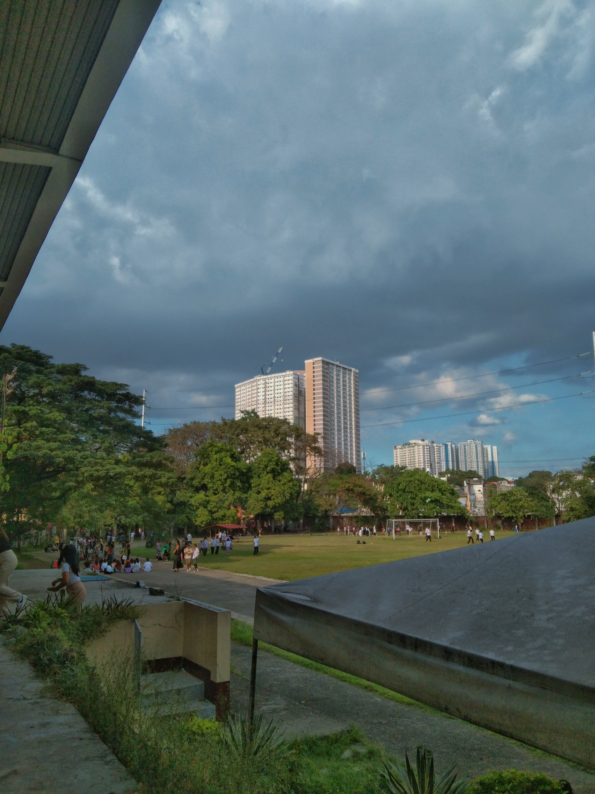
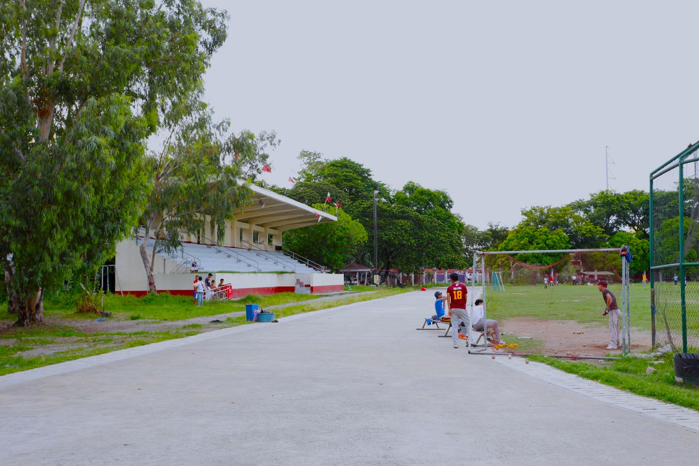
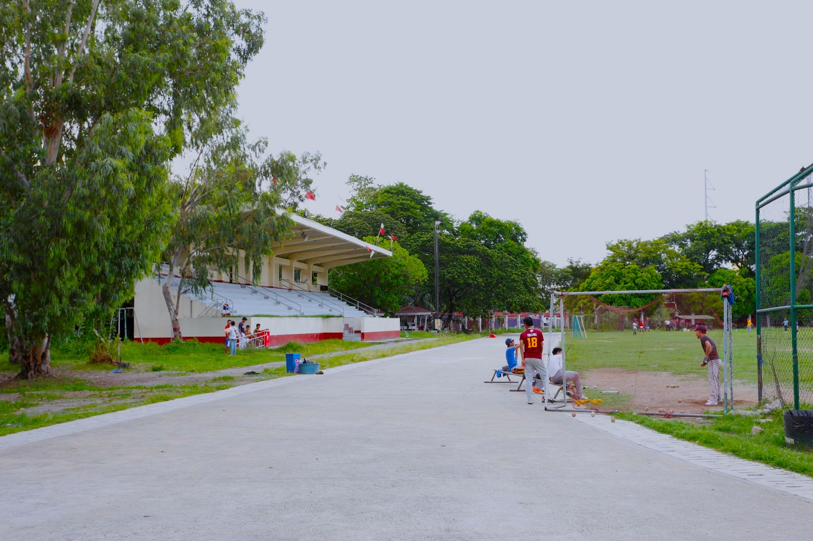

The PUP Oval Field, located within the A. Mabini Campus in Sta. Mesa, serves as the main outdoor sports and event area of the Polytechnic University of the Philippines. This wide, open field is designed for track and field events, sports practices, parades, and large campus gatherings such as intramurals and commencement exercises.
Significance and Features:
- The Oval is a central venue for athletic development, physical education classes, and university-wide activities, promoting fitness and camaraderie among students.
- It is surrounded by major campus landmarks including the Main Building, Grandstand, and Lagoon, making it one of the most recognizable open spaces in PUP.
- The field includes a standard running track, green turf area, and bleachers where spectators can watch sports and performances.
Key Notes:
- The entire A. Mabini Campus spans approximately 10.71 hectares, with the Oval occupying a large open portion dedicated to physical and cultural activities.
- It also serves as a venue for assemblies, and student organization events, reflecting the university’s lively and community-oriented culture.
Other Images:

 
